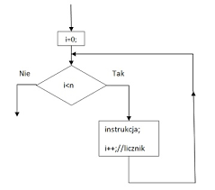

Pętla FOR
Konstrukcja
for(let i=0;i<=10;i++)
{
document.write("Hello world!");
}
Opis
Pętla FOR to konstrukcja programistyczna,
która służy do wielokrotnego wykonywania danego fragmentu kodu,
dopóki spełniony jest określony warunek.
Pętla FOR jest często używana do iteracji po elementach tablicy lub do wykonywania operacji na liczbach.
